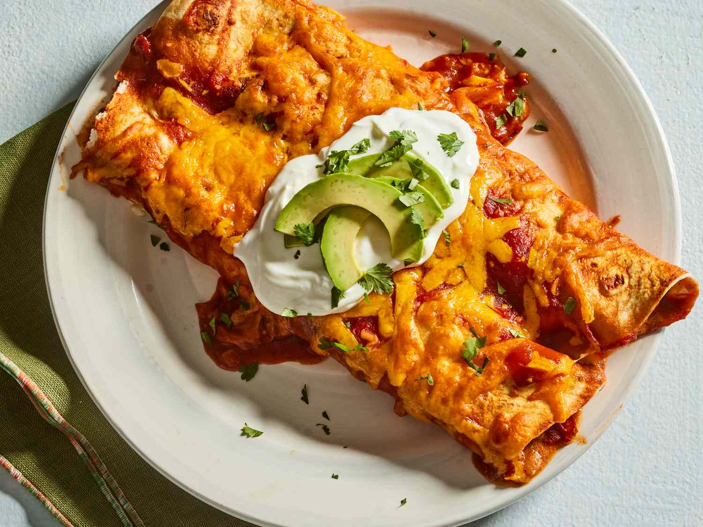

Home
Enchiladas

Description
Enchiladas are a traditional Mexican dish made by rolling tortillas around a savoury filling—such as seasoned meat, cheese, beans, or vegetables—then covering them with a flavourful
sauce and baking until hot and bubbly. They are commonly topped with melted cheese and served with sides like rice, beans, sour cream, or guacamole.
Ingredients:
- 500 g beef mince
- 1 small onion, diced
- 2 cloves garlic, minced
- 1 tsp ground cumin
- 1 tsp paprika
- 1 tsp chili powder (optional, for heat)
- Salt and pepper to taste
- 1 cup grated cheese (cheddar or Mexican blend)
- 2 cups enchilada sauce (store-bought or homemade)
- 8 medium flour tortillas (corn tortillas work too)
- 1–2 cups grated cheese (for topping)
- Fresh coriander (optional)
- Sour cream (optional)
- Diced avocado or guacamole (optional)
Method:
- Preheat your oven to 180°C (350°F).
- Cook the filling
- Heat a little oil in a pan.
- Cook the onion for 3–4 minutes until soft.
- Add garlic and cook for 30 seconds.
- Add the beef mince and cook until browned.
- Stir in cumin, paprika, chili powder, salt, and pepper.
- Remove from heat and mix in 1 cup of cheese.
- Spread a few spoonfuls of enchilada sauce over the bottom of the dish.
- Place some beef mixture in each tortilla. Roll them tightly and place seam-side down in the baking dish.
- Pour the remaining enchilada sauce evenly over the tortillas.
- Sprinkle the remaining grated cheese over the top
- Bake for 20–25 minutes, until the cheese is melted and bubbling.
- Let rest for 5 minutes. Top with coriander, sour cream, avocado, or your favourite toppings.